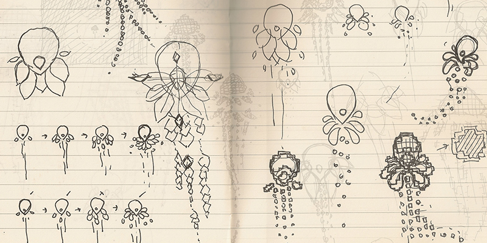
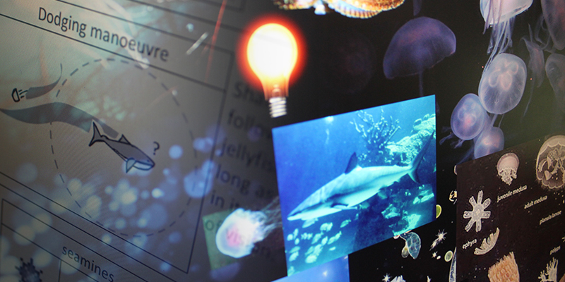
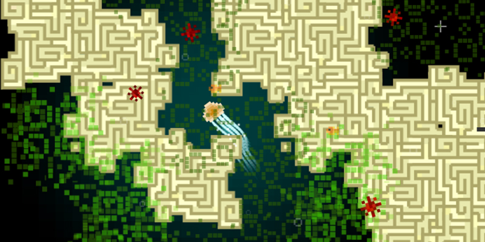
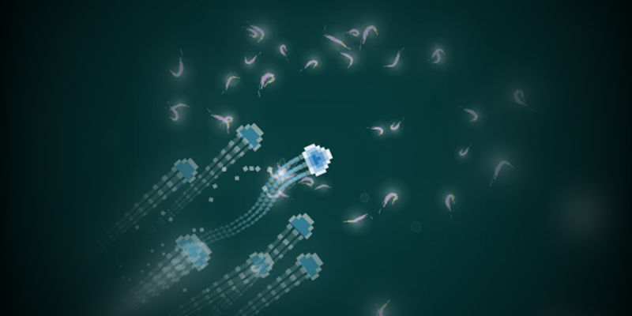
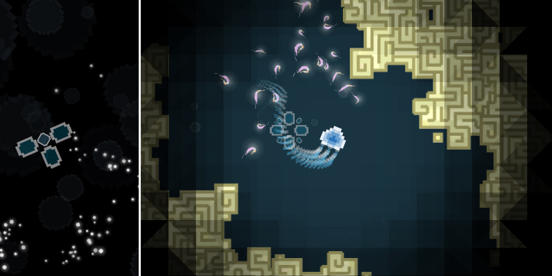

Intro / Brief / Theme
Jelly Journey is a prototype made for a university brief. The brief was to make a game that would include perfect and imperfect information. Perfect information is when player has complete knowledge about all of the game variables at any given time; imperfect information is when some of that knowledge is hidden. This is a very open brief, also this was one of the few times I was working on the game on my own, I began my development by settling on the theme which would be appropriate for the formal system of the game. At the time, I watched a lot of marine documentaries, so I already pre-decided that it would be an underwater adventure. Next I chose a sea creature that I wanted to explore, I chose a jellyfish because of its peculiar lifestyle.

Core Design
Core design was split into 2 parts- perfect information: levels, movement of the jellyfish and how the objects interact in the game, and imperfect information: field of vision (similar to fog of war) representing health of the jellyfish- the more shrimp jellyfish consumes the more visibility it has, and as it moves it slowly loses its vision(light). Additionally, enemies’ a.i. is done in such way that although they spawn in the same locations they have pseudo-random behaviours patterns. Meaning that when they are not chasing the jellyfish they explore the world what appears like at their own will.

Prototype
Within 2 weeks I have developed a prototype of the formal system, where I could test out simple gameplay and feel. I prefer making a working system before challenge or progression, as it shows more possibilities how the game can grow and expand. To clarify – I had basic movement and interaction with objects, but no particular goals or challenge. After envisioning the concept, I created a game design document. Containing moodboard, high level concept, verb and gameplay matrix. Game design document greatly assisted in developing this projects in a confined manner. In my experience the game always changes according to the feedback from playtesting, which in turn changes the game design document, nonetheless it’s a good place to start.

Feel of the game
Since I developed this project on my own, I had more time to concentrate on the things that I believe improve the overall experience. In my opinion polish of the game, in most cases, is more important than extra content. So I spent weeks, on developing perfect movement; by default, jellyfish is staying still, on click – the screen becomes slightly darker signifying that jellyfish is using energy when moving, on release – jellyfish propels towards the cursor, while water particles move way, and within a moment jellyfish comes to a stop. To add some depth, I added extra function to the click, jellyfish can either be moved with few short clicks, or the player can hold the click down to generate extra speed, which propels jellyfish much further and can be used to escape predators, however it drain energy much quicker. A simple risk-reward systems implemented in the movement, contributes to a richer experience. Aesthetically, jellyfish pulsates, and its tentacles are programmed to be dynamic. I wanted to add as many little details as possible, also it’s a great way to generate extra feedback for the player to make the game more comprehensible. (In fact this game was developed alongside my dissertation: “Games that Speak without Words”, where I explore how games communicate with the player)

Jellyfish life cycle system
As a part of my research I discovered that some jellyfish have an intriguing life cycle. Briefly, they begin as larvae, then they attach to a reef and grow into polyps, having flower like appearance, and then it finally separates into medusae – a floating creature, as we know it. What’s interesting is that; a jellyfish can devolve if it’s damaged or the environment is inhospitable; and turn back into larva to wait for more favourable time, technically as long as that chain is not broken jellyfish is immortal. I decided to incorporate this life cycle in my game. The player starts the game as a jellyfish, if the player runs out of energy (field of vision) or gets eaten by a predator, the player goes into a larva-mode where she can only consume food to grow into a polyp. (This mode also encourages player to collect shrimp in the regular game mode, as shrimp increases the energy.) As the player collects needed amount of food, she respawns in the previous level.

Bonus
You can play the game below!
Instructions: use cursor to navigate, click to move.
Eat, make friends and avoid enemies.